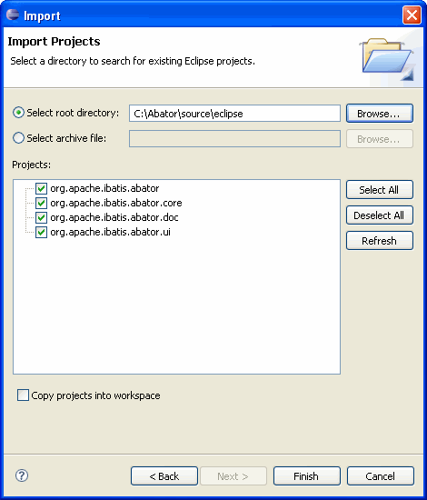

Building and Debugging the Plugins from Source
The following instructions show how to build the Abator plugins from the latest source
in the Subversion repository. We assume that you are somewhat familiar with Subversion
and the Eclipse plug-in development environment (PDE). These instructions also assume
you are using Eclipse version 3.2. Things are similar in Eclipse 3.1. The plug-in
code is not supported in versions of Eclipse prior to version 3.1.
- Checkout the latest source code from Subversion
- Create a local directory where the source will be stored (for example
/Abator/source)
- Check out the source tree from the Subversion repository at
http://svn.apache.org/repos/asf/ibatis/trunk/java/mapper/mapper2/tools/abator
- Create a new Eclipse workspace directory (for example /EclipseWorkspaces/Abator)
- Start Eclipse and point it to the new workspace directory
- Import the plug-in projects into the workspace
- Start the Eclipse project import wizard
(File>Import>General>Existing Projects into Workspace)
- Set the root directory to the "eclipse" sub-directory of the directory where
you did the SVN checkout (for example, /Abator/source/eclipse)
- Select the four projects under the directory, do not copy the projects into
your workspace. The filled out wizard looks like this:

- Press "Finish", wait for the workspace to build.
- Note that there may be errors in the build depending on which JDK you have installed
(for the official release, Abator is compiled with JDK 1.4.2).
If you see an error stating that
java.lang.Object cannot be resolved,
then follow these steps to fix the problem:
- Right click on the project "org.apache.ibatis.abator.ui", then select "Properties"
- Select "Java Build Path" in the left pane
- Select the "Libraries" tab in the right pane, then highlight the
"JRE System Library" entry (there will also be the word "unbound" in the
entry), press the "Remove" button
- Press the "Add Library..." button
- Select "JRE System Library" from the dialog, press "Next"
- Select an installed JRE (the default is fine as long as it is JDK 1.4 or better),
press "Finish"
- Press "OK" to close the properties dialog. The workspace will rebuild and
the errors should be removed. You may see warnings in the workspace, but you
can ignore them